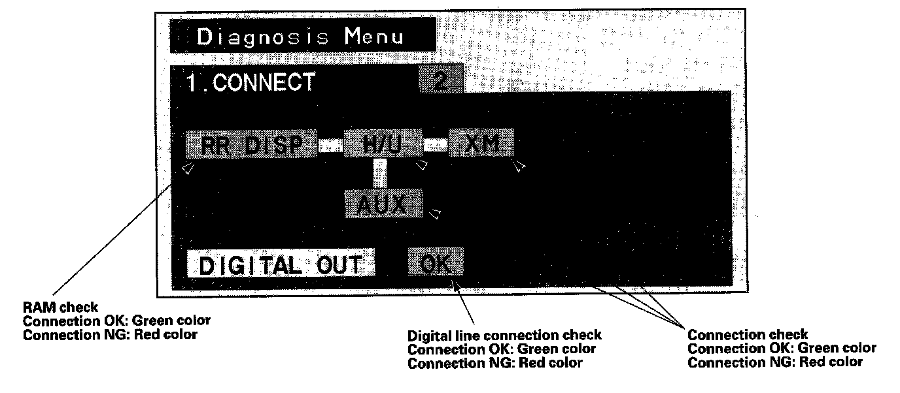
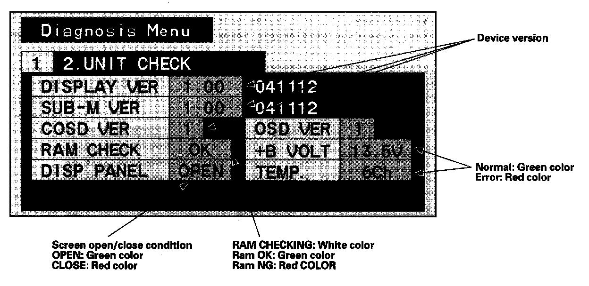

Initial Inspection and Diagnostic Overview
Self-diagnostic FunctionThe rear entertainment system has a self-diagnostic function that shows on the display. To run the self-diagnostic function, do the following:
How to Enter the Self-diagnostic Function with the Audio Unit
1. Turn the ignition switch to the ACC (I) position.
2. To run the self-diagnostic, press the REAR PWR button four times within 3 seconds and hold the REAR PWR button in on the fourth time until the diagnostic screen appears.
How to Enter for Self-diagnostic Function with the Wireless Remote Control
1. Turn the ignition switch to the ACC (I) position.
2. To run the self-diagnostic, press the DVD/AUX button, the AM/FM button, the ( ->-> ) button, and then the AM/FM button again. The buttons must be pressed in that order, and within 2 seconds of each other (see table), and the self-diagnostic will begin.
Canceling the Self-diagnostic Function
Turn the ignition switch OFF to cancel the self-diagnostic function. After completing repair work, run the self-diagnostic function again to make sure that there are no other malfunctions.
Self-diagnostic Function Mode Select
Self-diagnostic Function Mode Display

1. CONNECT
The screen will display connection check status for each device while in this self-diagnostic mode.
- If the RAM condition for the "RR DISP" (rear controller and screen) is faulty, the screen will display NG (red color).
- If the connection for the "H/U" (audio unit) is "XM" (XM receiver), or "AUX" (auxiliary jack assembly) is faulty, the screen will display NG (red color).
- If the digital line connection between the rear controller and screen and audio unit is faulty, the screen will display NG (red color).

2. UNIT CHECK
The screen will display device version, self-diagnostic status and screen status while in this self-diagnostic mode.
- If a connection to a device is no-good, the screen will display "--------".
- If there is a change (analog to digital) of signal error for the categories "+B VOLT" or "TEMP", the screen will display "Err".
- The screen indicates open or closed condition of the screen.